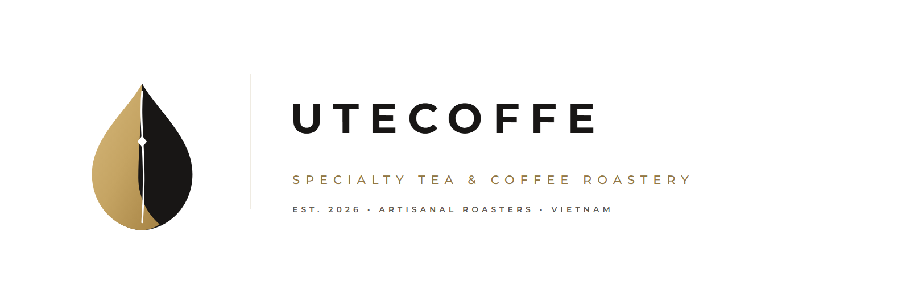

Hình 1: Master Logo UTECoffe - Bản Phối Ngang Chuẩn Cho Header Website & Ấn Phẩm Thương Hiệu

Trong đề tài "Xây dựng website chuỗi bán trà và cafe UTECoffe", thương hiệu được định vị là chuỗi thức uống đặc sản kết hợp nền tảng thương mại điện tử đa kênh (Omnichannel eCommerce). UTECoffe không chỉ cung cấp thức uống giải khát đơn thuần mà còn hướng tới trải nghiệm phong cách sống hiện đại (Lifestyle & Specialty Coffee/Tea).
Lấy cảm hứng từ trường phái tối giản đương đại (Contemporary Minimalist) của các thương hiệu hàng đầu thế giới như % Arabica (Kyoto), Blue Bottle Coffee (California) và Nespresso, biểu tượng UTECoffe hoàn toàn thoát ly khỏi lối mòn của các con dấu tròn rập khuôn, tập trung vào hình học đặc trưng (Iconic Mark) sắc sảo trên nền trắng thuần khiết (#FFFFFF).
Hình dáng tổng thể mô phỏng một giọt chất lỏng đang rơi xuống – kết tinh của từng giọt cà phê Espresso mộc đậm đặc và từng giọt trà được ủ chuẩn nhiệt độ. Biểu tượng cho sự chắt lọc tinh túy, tâm huyết của nghệ nhân pha chế (Barista Craft).
Mạn trái là đường cong nhẹ nhàng của lá trà non Camellia Sinensis vươn lên đón nắng. Đại diện cho nguồn nguyên liệu tự nhiên thuần khiết từ các nông trường chè Tây Nguyên, mang lại vị thanh tao, dịu nhẹ và thư thái cho tâm hồn.
Mạn phải mang dáng hình hạt cà phê Arabica đặc sản với đường cong đầy đặn, chắc khỏe. Tượng trưng cho sự nồng nàn, chiều sâu, tính kiên định và phong cách thưởng thức cà phê rang mộc nguyên bản đầy cá tính.
Chi tiết hình thoi/kim cương trắng nằm ngay trên rãnh trung tâm là biểu tượng của "Chuẩn Mực Vàng" (Golden Ratio) trong kiểm soát chất lượng. Đồng thời, nó gợi liên tưởng đến ngòi bút tri thức và công nghệ của sinh viên UTE.
Đáy tròn của giọt nước cùng hai cánh vươn lên khéo léo tạo hình chữ "U" mềm mại – chữ cái đầu tiên của UTE và UTECoffe, ghi dấu ấn thương hiệu một cách tinh tế mà không phô trương.
Hai nửa sáng - tối, trà - cà phê, thanh tao - đậm đà ôm trọn lấy nhau tạo nên một khối thống nhất hài hòa, thể hiện tôn chỉ phục vụ đa dạng nhu cầu của khách hàng trên cùng một nền tảng bán hàng.
Màu hạt cà phê rang mộc. Biểu thị sự vững chãi, cao cấp và nguyên bản.
Màu búp trà non & sự xa xỉ. Biểu thị chất lượng thượng hạng và thịnh vượng.
Nền không gian bắt buộc. Tôn vinh hình khối, tạo độ thoáng và sạch sẽ.
| Thành Phần | Kiểu Font & Đặc Tính | Ý Nghĩa Thiết Kế |
|---|---|---|
| Tên Thương Hiệu (UTECOFFE) | Geometric Sans-serif, nét dày (Bold 700), khoảng cách giãn chữ (Tracking 18px) rộng thoáng. | Thể hiện tinh thần hiện đại, minh bạch, năng động của thế hệ trẻ và tư duy công nghệ mở. |
| Định Vị (SPECIALTY TEA & COFFEE) | Chữ in hoa nét mảnh thanh lịch (Medium 500), màu vàng Champagne Gold. | Khẳng định phân khúc đồ uống đặc sản (Specialty) và xưởng rang thủ công (Roastery). |
| Đường Chỉ Phân Cách (Vertical Divider) | Đường nét thanh 1.5px màu be ấm (`#EAE4D8`). | Tạo nhịp nghỉ thị giác, phân định rành mạch giữa biểu tượng nghệ thuật và tên thương hiệu. |
| Tên File | Định Dạng | Mục Đích Sử Dụng Trong Source Code Web |
|---|---|---|
logo_chinh_ngang.png / .svg |
PNG 1600x500 & SVG | Đặt trên Header Navbar chính của trang chủ, trang thanh toán giỏ hàng và hóa đơn VAT. |
logo_chinh_doc.png / .svg |
PNG 1000x1200 & SVG | Đặt tại trang Đăng nhập / Đăng ký (Login modal), trang giới thiệu (About us) và Footer. |
logo_bieu_tuong_app_icon_512.png / .svg |
PNG 512x512 & SVG | Làm icon ứng dụng PWA (Progressive Web App) và ảnh đại diện mạng xã hội OpenGraph. |
favicon.ico, favicon_32x32.png |
ICO & PNG | Nhúng trực tiếp vào thẻ <head> của layout Decorator Sitemesh / JSP. |
"Kính thưa Thầy/Cô Hội đồng, biểu tượng UTECoffe được thiết kế dựa trên sự hợp nhất tinh hoa giữa Giọt cà phê mộc đậm đà và Búp trà non thanh khiết theo tỷ lệ vàng tối giản. Trung tâm là điểm nhấn tâm điểm biểu trưng cho ngòi bút tri thức UTE và công nghệ chiết xuất thủ công. Logo hoàn toàn thoát ly khỏi các khuôn mẫu rập khuôn cũ, mang phong cách phong cách tối giản hiện đại, giúp nâng tầm trải nghiệm của khách hàng trên nền tảng thương mại điện tử Spring Boot hiện đại."